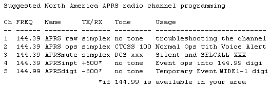
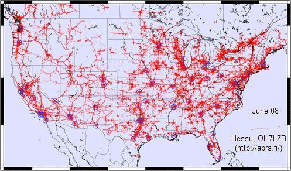
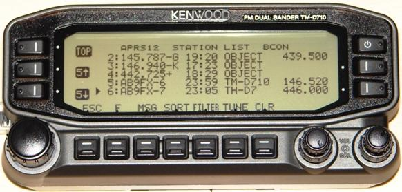
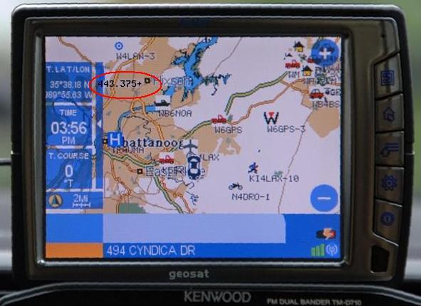
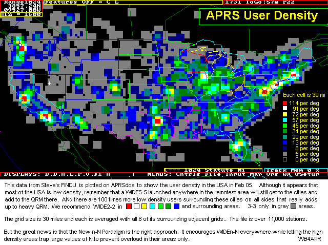
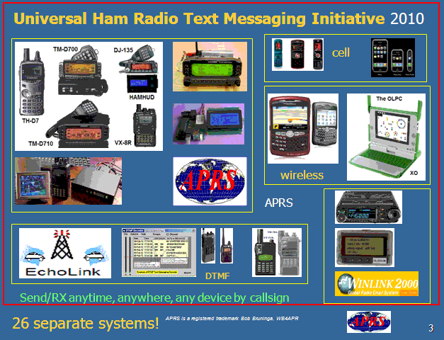
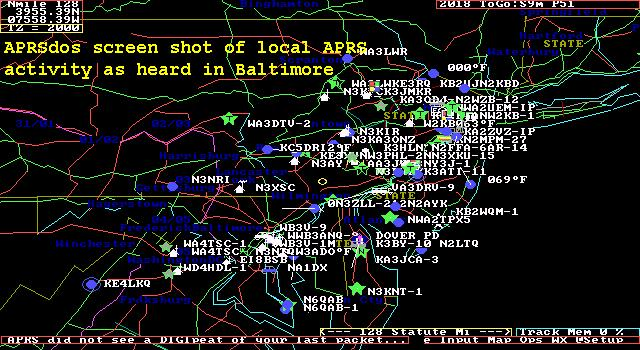
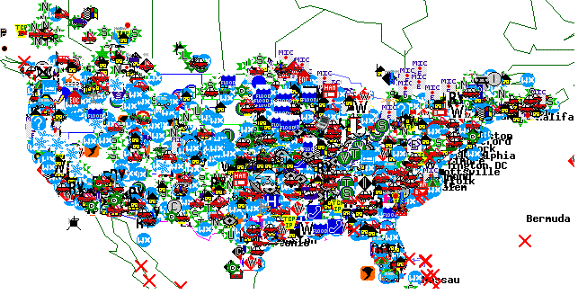
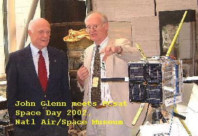

Other personal links (Not related to APRS): On Electric Vehicles and Solar Power.
APRS is now in its 21st year! APRS is digital communications information channel for Ham radio. As a single national channel (see map at right), it gives the mobile ham a place to monitor for 10 to 30 minutes in any area, at any time to capture what is happening in ham radio in the surrounding area. Announcements, Bulletins, Messages, Alerts, Weather, and of course a map of all this activity including objects, frequencies, satellites, nets, meetings, Hamfests, etc. The APRS network has grown to most countries with strong Amateur Radio populations.
Download: . . APRS/Energy Talk at Superfest in Peoria, ILL Sept 2015
. . . . . . . . . . . . APRStt Satellite QIKCOM-2, presented in Utah, Aug 2015
. . . . . . . . . . . . APRS-by-Bob Powerpoint (8 Mb) (Feb 2015 version).
. . . . . . . . . . . . Dayton 2015 Talk
This page evolves over time. New stuff is posted here at the top. Older stuff migrates downward. To see the full description of APRS you have to drill downward pretty far. But it is there back to the beginning (1992).
 APRS Operations Tip: There are several different ways to optimize your APRS mobile operations depending on the immediate situation. One way to rapidly select between them without having to go through menu's is to simply program several radio channels with the different settings. The beauty of these channel suggestions is that you can always leave the speaker volume turned up on the APRS data band and can move between full audio monitoring, to Voice Alert, or to complete silence simply by changing channels. For the Voice Alert to always be functional and not miss a call, operators should never have their APRS band volume turned down. Instead, they can silence the speaker in the presence of lots of voice alert stations by selecting the APRSmute channel. By the way, here is a chart of APRS on 30 meters.
RECENT INITIATIVES:
APRS is not a vehicle tracking system. It is a two-way tactical real-time digital communications system between all assets in a network sharing information about everything going on in the local area. On ham radio, this means if something is happening now, or there is information that could be valuable to you, then it should show up on your APRS radio in your mobile. See typical oversights and hear my talk on the 3 Oct 08 Rain Report See also some original APRSdos views and concepts overlooked in some new programs.
APRS also supports global callsign-to-callsign messaging, bulletins, objects email and Voice because every local area is seen by the Internet System (APRS-IS)! APRS should enable local and global amateur radio operator contact at anytime-anywhere and using any device. See the APRS Messaging/Contact Initiative. .
 APRS Internet System (APRS-IS): Like most other Ham radio systems, APRS has been fully integrated with the internet beginning with the efforts of Steve Dimse and the Sproul Brothers in 1997. Currently there are many web pages for live viewing of APRS activity such as APRS.FI, or FINDU.COM. For example, the map below from Hessu, OH7LZB's web site http://aprs.fi/ shows a one month snapshot of activity which reveals some gaps in the APRS coverage in the USA.
Click to see 2008's animation!
Click to see 2010 holes, Thanksgiving week 2010)(holes as follows:)
APRS SPEC! . APRS continuously evolves. There have been several initiatives that have drastically improved APRS network performance and useability for users. The original APRS spec was updated in 2004 with the APRS1.1 addendum and since then with the APRS1.2 updates. Most of these new initiatives are listed here.
OVERVIEW: The Automatic Packet Reporting System was designed to support rapid, reliable exchange of information for local, tactical real-time information, events or nets. The concept, which dates back to the mid 1980's, is that all relevant information is transmitted immediately to everyone in the net and every station captures that information for consistent and standard display to all participants. Information was refreshed redundantly but at a decaying rate so that old information was updated less frequently than new info. Since the primary objective is consistent exchange of information between everyone, APRS established standard formats not only for the transmission of POSITION, STATUS, MESSAGES, and QUERIES, it also establishes guidelines for display so that users of different systems will still see the same consistent information displayed in a consistent manner (independent of the particular display or maping system in use). See the original APRS.TXT. The two images below should give you an idea of the kinds of information available to the mobile operator on his APRS radio. On the left is the Kenwood D710 radio showing the station list, and on the right is the attached GPS with map display showing the location of other APRS stations.
 
Each station or object in the list has three more pages of information on it. The objects can show Repeater frequenceis in an area, meetings, nets, events, hamfests, echolink and IRLP nodes and frequencies, traffic speeds, accidents, emergency situations. And the attached GPS can show the location of each of these items.
THE GOAL IS COMMUNICATIONS and LOCAL INFO UPDATE, -NOT- JUST VEHICLE TRACKING!
APRS was never intended to be just a vehicle tracking system (GPS was added in the 1992 time frame when GPS became affordable). APRS is much more. See the Kenwood mobile display above. This is the STATION LIST which shows the nearest 100 stations heard. . In this case, not only are the two stations of AB9FX nearby, but also his current VOICE operating frequency is visible. Also, we can see that this radio is in OPERATING range of three voice repeaters that are also identifying themselves as objects on APRS as the locally recommended voice operating channels.
 APRS provides situational awareness to all operators of everything that is going on in his local area, whether it be Weather reporting, traveler info, Direction Finding, objects pointing to ECHOlink and IRLP, or Traffic reporting and emergency response. All of this while providing not only instantaneous operator-to-operator keyboard messaging capability for special events, but also an always-on Voice Alert backchannel between mobiles in simplex range. There is even an APRS interface to the WinLINK system called APRSlink, so that mobiles can send and receive Email without needing a PC. Think of APRS as a signalling channel to reveal ALL amateur radio resources and live activities that are in range of the operator at any instant in time.
UBIQUITOUS OPERATIONS: APRS must work everywhere to be a true resource to the mobile ham radio operator. In North America, 144.39 MHz is dedicated throughout the continent. In Europe, use 144.80 and in Australia use 145.175 MHz.. National operating rules were standardized in the 2004 time frame under the New-N Paradigm to eliminate obsolete and inefficient routing. Now, only a 2 hop WIDE2-2 path is recommended in all areasthough mobiles can use the special WIDE1-1,WIDE2-1 two-hop path that takes advantage of nearby WIDE1-1 fill-in digipeaters. See the high density areas in the map to the right. Further, the APRS channel is a resource to inform everyone of nearby ham resources in range. Please see the Local Info Initiative.
APRS GLOBAL INTERNET SYSTEM: Although APRS is a local, tactical real-time two-way communications system, all local information is injected into the APRS-IS Internet system so it can be monitored anywhere. Here is the live IGate list of over 1500 IGates that give connectivity throughout the world. Not only does this allow for global monitoring of local activity, it also allows the two-way point-to-point messaging between any two APRS users anywhere on the planet (that has an APRS infrastructure). Everything goes in so it is available to everyone on the internet, but only messages and selected position data goes back out to RF to keep the channel local and lightly loaded.
 UNIVERSAL TEXT MESSAGING FOR AMATEUR RADIO: . Not only can APRS users text-message each other live, but they can also text-message with many other cross-platform media. There is an initiative to cross connect ALL consumer type hand-held wireless devices to the APRS system so that any two radio amateurs can text-message callsign-to-callsign completely independent of the type of device. They can use cell phones, blackberrys, pagers, DTMF HT's or just about any other kind of device. See the web page: Universal Text Messaging Initiative
APRS was developed by Bob Bruninga, WB4APR, as a real-time local tactical communications system for rapidly exchanging digital data of immediate value to operations. This really took off when GPS became available and MAPS were integrated into the system for tactical situational awareness of everything in the net. In the 18 years since its introduction, (see history) it has grown to encompass just about every aspect of Amateur Radio. For the original introduction to APRS, CLICK HERE or check out the first category of links below to get the big picture of what APRS is all about...
 . The above left shot was APRSdos in the early 1990's. Now it is world wide linked initially by K4HG's global FINDU.COM shown on the right. More recently, Hessu's APRS.FI has become popular, as well as OpenAPRS.NET. The map above shows the approximate 20,000 users now on the air in the USA at any instant.
Here are some other LIVE maps from around the country and the world showing the global, yet LIVE aspect of APRS:
USA WEST:........
Southwest,
Northwest,
4-Corners,
Central CA,
Southern CA,
Hawaii
USA CENTRAL:
North Central,
Midwest,
South Centeral
USA EAST:........
New England,
Northeast,
Mid Atlantic,
Wash-DC,
Southeast,
Florida
WORLD:............
Europe,
S.America and Africa,
Australia/NewZealand,
Japan
The remainder of this page is just a list of links to just about everything
involving APRS in the last 10 years. To cover the breadth and
depth of these applications, just follow the links...
OVERALL APRS CONCEPT LINKS FOR NEW USERS:
 NEW ITEMS and IDEAS
APRS SATELLITE PROJECTS
OTHER APRS APPLICATIONS AND USES
OTHER LIVE INTERNET APRS SITES
OTHER APRS INFORMATION SITES
APRS DATA and FILES
HISTORICAL LINKS AND OLD STUFF
Join the TAPR APRS Special Interest Group E-mail Reflector:
APRSSIG
Back To Satellite Ground Station
{kind=link}
{kind=link}
{kind=link}
{kind=link}
{kind=link}
{kind=link}
{kind=link}
{kind=link}
{kind=link}
{kind=link}
{kind=link}
{kind=link}
{kind=link}
{kind=link}
{kind=link}
{kind=link}
{kind=link}